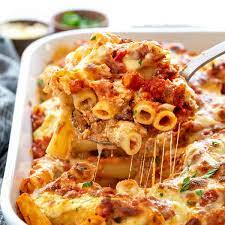

Baked Ziti

Baked ziti was a comfort food for me growing up, and a staple throughout college. Cheap, easy, warm, filling, this dish had it all.
I hope you enjoy my baked ziti as much as I do!
Ingredients
- 16 oz ziti (1 box)
- 12 oz tomato sauce (1.5 jars)
- 16 oz Italian sausage
- 2 cups shredded mozzarella cheese
- 4 oz ricotta cheese
- 1 egg, beaten
- 1 teaspoon dried basil
- 1 teaspoon dried oregano
- 1 clove minced garlic
- salt and pepper to taste
Steps
- Preheat oven to 350 degrees F.
- Boil water and cook pasta 10-12 minutes. Drain.
- Brown sausage in frying pan.
- In a bowl, combine ricotta, herbs, garlic, egg, salt and pepper.
- Once the pasta and sausage are cooked, combine sausage, pasta, and tomato sauce in a pot. Transfer to a baking dish.
- Spread the ricotta mixture throughout the dish by adding big clumps and lightly swirling them.
- Cover the dish with the shredded mozzarella.
- Bake in oven for 20 mins or until cheese is brown and bubbly. Enjoy!
Home